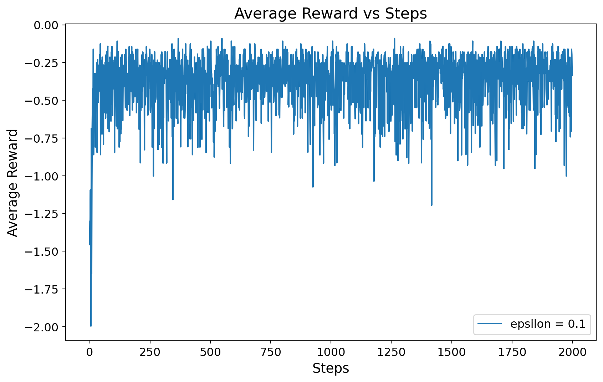

import numpy as np
import matplotlib.pyplot as plt
class newsvendor_as_bandits:
def __init__(self, k, h, p, mu, sigma):
self.k = k
self.h = h
self.p = p
self.mu = mu
self.sigma = sigma
def bandit(self, action):
# sample demand to integer
demand = round(np.random.normal(self.mu, self.sigma))
# calculate cost
cost = self.h * max(action - demand, 0) + self.p * max(demand - action, 0)
return -cost
class bandit_algorithm:
def __init__(self, bandit, epsilon, steps):
self.bandit = bandit
self.epsilon = epsilon
self.steps = steps
self.k = bandit.k
self.Q = np.zeros(self.k)
self.N = np.zeros(self.k)
self.reward = np.zeros(self.steps)
def learn(self):
for t in range(self.steps):
# epsilon greedy
if np.random.rand() < self.epsilon:
action = np.random.randint(self.k)
else:
# choose action with maximum Q, if multiple, choose randomly
action = np.random.choice(np.where(self.Q == np.max(self.Q))[0])
# get reward
reward = self.bandit.bandit(action)
# update Q
self.N[action] += 1
self.Q[action] += (reward - self.Q[action]) / self.N[action]
# update reward
self.reward[t] = reward
if __name__ == "__main__":
# set random seed for reproducibility
np.random.seed(0)
# parameters
k = 10
h = 0.18
p = 0.7
mu = 5
sigma = 1
optimal = 6
epsilon_list = [0.1]
steps = 2000
# mean reward
number_of_runs = 10
rewards = np.zeros((len(epsilon_list), number_of_runs, steps))
# newsvendor problem
newsvendor = newsvendor_as_bandits(k, h, p, mu, sigma)
for i in range(len(epsilon_list)):
for j in range(number_of_runs):
# initialize bandit algorithm
bandit = bandit_algorithm(newsvendor, epsilon_list[i], steps)
# learn
bandit.learn()
# store results
rewards[i, j, :] = bandit.reward
# print optimal action and Q value
print(
"optimal action = {}, Q = {}".format(
np.argmax(bandit.Q), bandit.Q[np.argmax(bandit.Q)]
)
)
# plot
plt.figure(figsize=(10, 6))
for i in range(len(epsilon_list)):
plt.plot(
np.mean(rewards[i, :, :], axis=0),
label="epsilon = {}".format(epsilon_list[i]),
)
plt.xlabel("Steps", fontsize=14)
plt.ylabel("Average Reward", fontsize=14)
plt.title("Average Reward vs Steps", fontsize=16)
plt.tick_params(axis="both", which="major", labelsize=12)
plt.legend(fontsize=12)
plt.show()optimal action = 6, Q = -0.2510071942446042
optimal action = 6, Q = -0.2510820045558093
optimal action = 6, Q = -0.24312393887945655
optimal action = 6, Q = -0.24921290322580647
optimal action = 6, Q = -0.25454344216934205
optimal action = 6, Q = -0.24310325786858075
optimal action = 6, Q = -0.2506343077771653
optimal action = 6, Q = -0.24419944598337928
optimal action = 6, Q = -0.251546052631579
optimal action = 6, Q = -0.2518596881959912